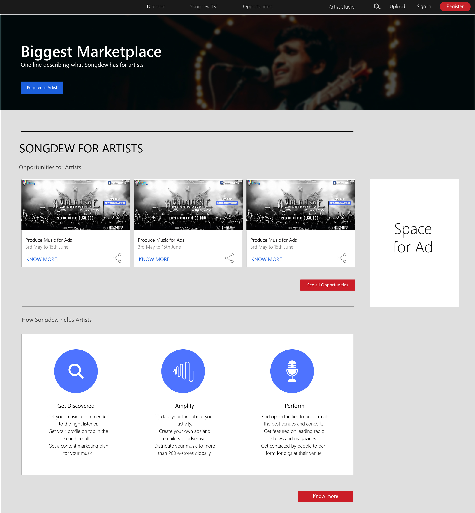
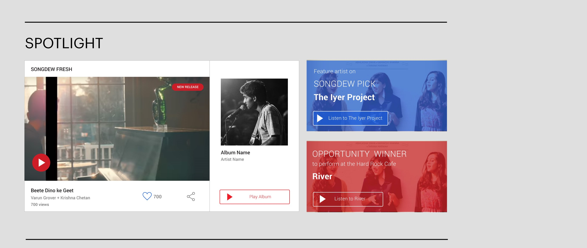
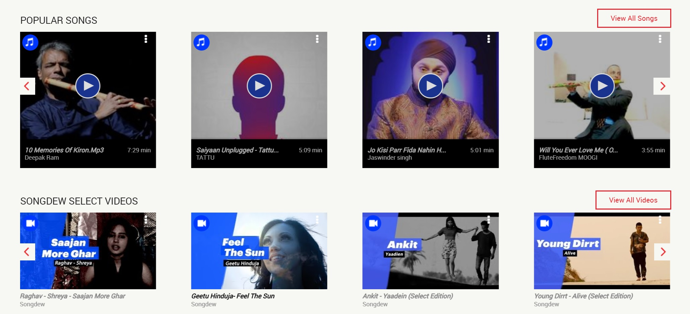
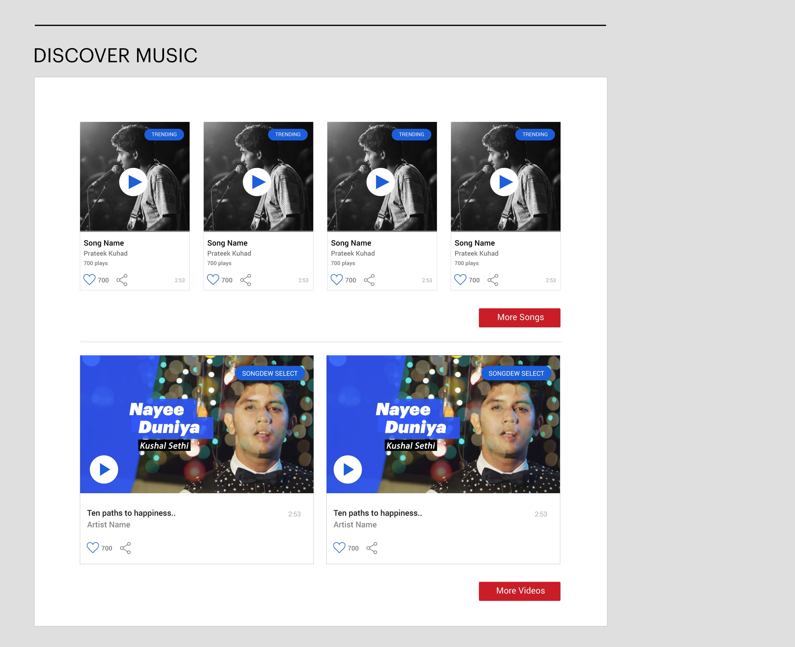

Songdew is an independent music startup that offers a platform to Indian independent musicians to release and upload their music, making it available to listeners through streaming. In addition to enabling the creation and sharing of independent music, Songdew works with multiple corporations that require original music, creating additional opportunities for musicians through the platform.
When I joined Songdew, they did not have a UX team and process in place. The artists and listener experiences were fragmented. The primary question that I had to answer was how to unify these two experiences? This was particularly challenging because Songdew had different types of content such as music, videos, opportunities, and Songdew TV.
I led the UX Design at Songdew, working in collaboration with the product, marketing, and social media team, supporting them in achieving their goal while advocating for UX in the company. As a solo designer in the team, I was also responsible for the UI design and cross-platform consistency.
Before the redesign, the navigation bar had to different buttons (for the artist and the listener) to segregate the content. We asked the questions, what if we push this segregation after the signup?
Through a heuristic evaluation, we found out that new users should not have to choose between these two categories for navigating the content. We started with getting rid of the features and content that did not align with the product goals and were directly affection the experience. We reworked the information architecture to organize the content before and after signup using card sorting. For the content before the signup, instead of segregating them through different navigation buttons, we arranged them on the same page. As shown in the image below, we organized the content for artists under the heading Sondgew for Artists.
Segregating Artist and Listener Features using Heading
During the card sorting, we identified a group of content that the Songdew product, marketing, and music release team thought as important, but it didn’t really fit in either the listener or artist category. This category included content like new content for listeners, opportunities for artists. To push this content, we conceptualized a category spotlight, we differentiated it from other categories on the home page by break the grid that we used to present other content like songs, videos, and opportunities. Initial user testing showed that the participants would pause the eye and look at the content as it presented itself as different from the rest of the page.
Using Card sorting to determine features presented before and after signup and conceptualizing Spotlight, a collection of recent and most important content.
In addition to restructuring the content of the website, we identified several uability issues to The song and video cards on the Songdew had similar width before the redesign. Through initial user testing, we found that at a glance, it was hard to tell that the song and video cards were two different content, even though initial design included UI markers. We worked through several iterations of the size of song and video cards and tested them with users to finalize keeping the height of the image same and making the video card wider than the song card.
The title of songs and videos were not consistent, we redesigned all the cards to ensure UI consistencies.
The product team at Songdew was trying to push more content by autoscrolling the cards and providing horizontal sliders. Through initial user testing, we found out that the automatic scrolling created an unpleasant experience and the users hardly paid attention to the horizontal sliders. We used these finding to advocate for removing these features and reduce the content on the homepage.
The song and video cards before the redesign
Redesigning the Video and Song Cards for UI consistency and clarity